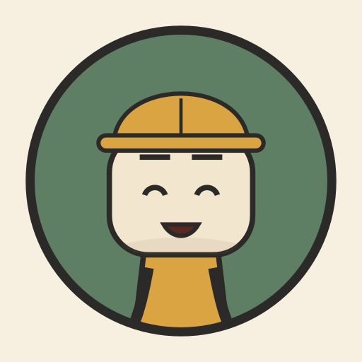

Root Cause
Short animated stories about famous engineering failures, told for curious young viewers. Every episode asks one question: what really went wrong, and how do engineers stop it from happening again?
What you'll find
- Hand-coded cartoon animation with our guide, Bolt. No AI-generated footage.
- A "Can you guess?" quiz in every episode, then the real root cause and three lessons learned.
- Facts checked against published sources. Hard numbers stay in a short, quiet "deep note" at the end.
- Three seasons, from the Vasa warship to the Y2K bug, plus short versions for YouTube Shorts.
Root Cause Publisher
Root Cause Publisher is a small private tool the channel owner uses to upload and schedule this channel's own videos through the YouTube Data API. It is not offered to the public, and nobody else can sign in to it. See the privacy policy for exactly what it accesses.
Contact
Questions, corrections or ideas for an episode: ahseust@gmail.com.